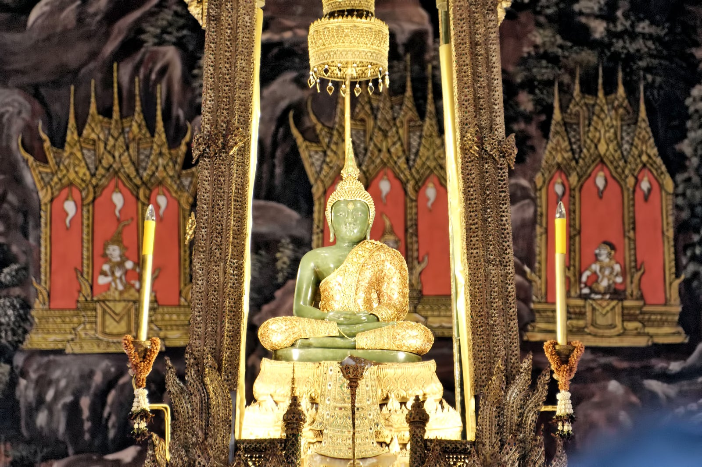
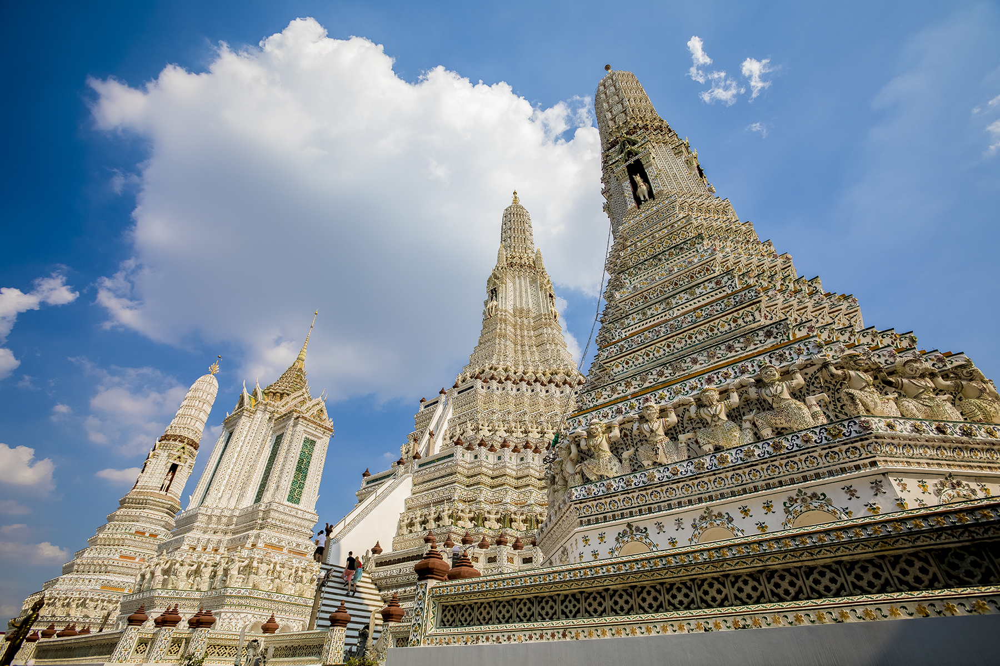
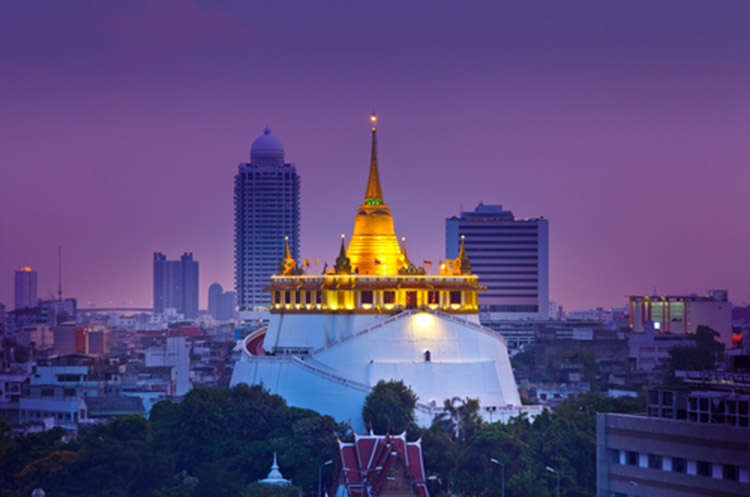
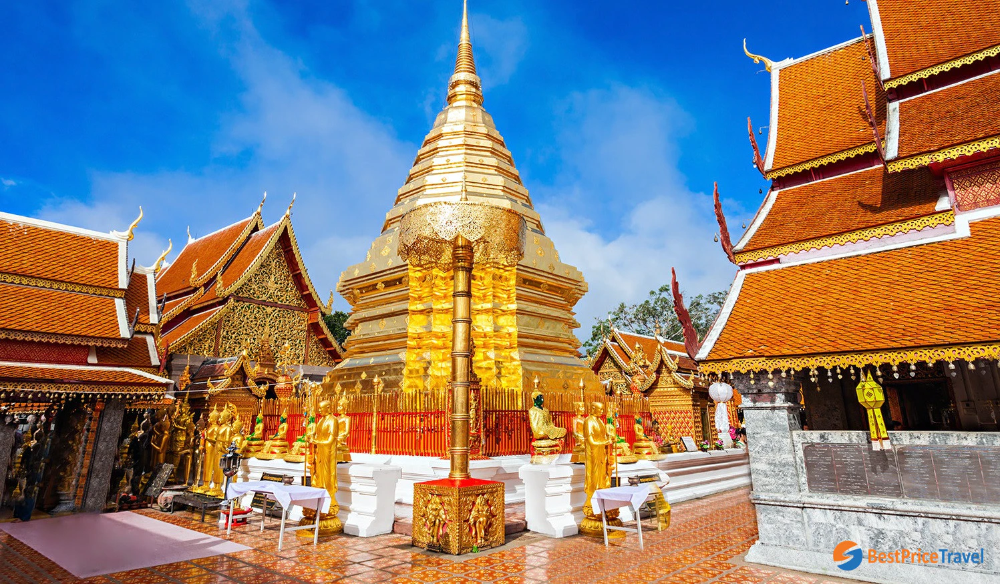
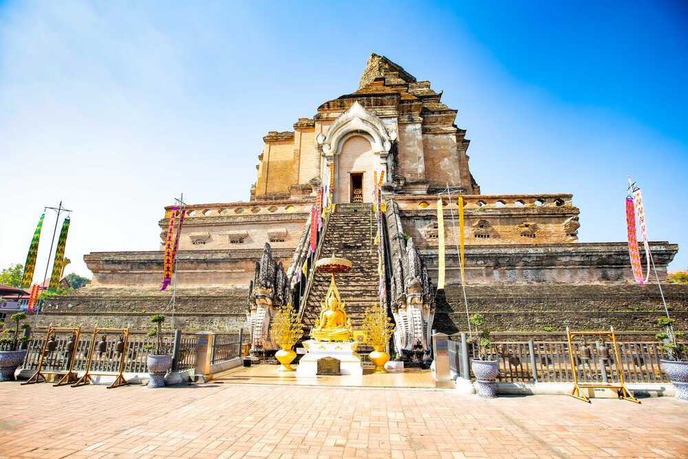
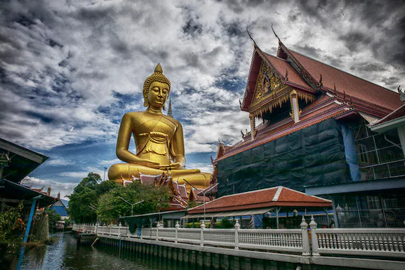
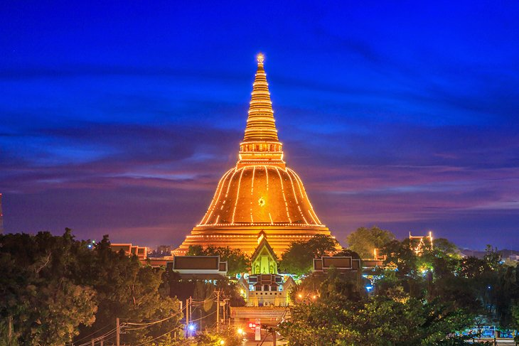
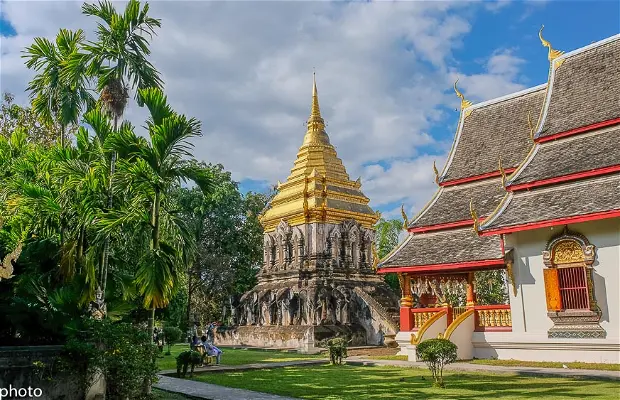

Wat Rong Khun, better known as the White Temple, is a privately owned art exhibit in the style of a Buddhist temple in Pa O Don Chai, Mueang District, Chiang Rai Province, Thailand. It is owned by Chalermchai Kositpipat, who designed, constructed, and opened it to visitors in 1997

Wat Phra Kaew
Wat Phra Kaew, commonly known in English as the Temple of the Emerald Buddha, is regarded as the most sacred Buddhist temple in Thailand. The complex is within the precincts of the Grand Palace. It houses the statue of the Emerald Buddha, which is venerated as the country's palladium.

Wat Arun
Wat Arun (Thai pronunciation: [wát arun], "Temple of Dawn") is a Buddhist temple (wat) in Bangkok Yai district of Bangkok, Thailand, on the Thonburi west bank of the Chao Phraya River. The temple derives its name from the Hindu god Aruṇa,[1] often personified as the radiations of the rising sun.

Wat Saket
When Bangkok became the capital, King Rama I (1737–1809) renovated the temple and gave it its present name (which roughly translates as "wash hair"): it was believed that on his return from the war, the king stopped to take a bath and wash his hair here, before entering the inner city.

Wat Doi Suthep
The temple is often referred to as "Doi Suthep" although this is actually the name of the mountain where it's located. It is a sacred site to many Thai people. The temple is 15 kilometres (9.3 mi) from the city of Chiang Mai and situated at an elevation of 1,073 meters, giving a great view of Chiang Mai.

Wat Chedi Luang
Known as the Temple of the Royal Stupa, the construction of the temple started in the 14th century, when King Saen Muang Ma planned to bury the ashes of his father there. After 10 years of building time it was left unfinished, later to be continued after the death of the king by his widow.

Wat Paknam
On March 4, 2017, Wat Paknam began building a Buddha image in honor of Luang Pu Sodh and the Thai Royal Family. Called "Phra Buddha Dhammakāya Thepmongkhon", the image is 69 meters (226 ft) tall and 40 meters (130 ft) wide, and is located before the stupa.

Phra Pathom Chedi
Phra Pathommachedi or Phra Pathom Chedi is a Buddhist stupa in Thailand. The stupa is located in the Wat Phra Pathommachedi Ratcha Wora Maha Wihan, a temple in the town center of Nakhon Pathom, Nakhon Pathom Province, Thailand. Phra Pathommachedi is the tallest stupa in the world.

Wat Chiang Man
Wat Chiang Man was built by Mangrai[1]: 209 in 1297 CE as the first temple of Chiang Mai on the location of Wiang Nopburi, a fortified town of the Lawa people which had been used by King Mangrai as a camp during the construction of his new capital city Chiang Mai.